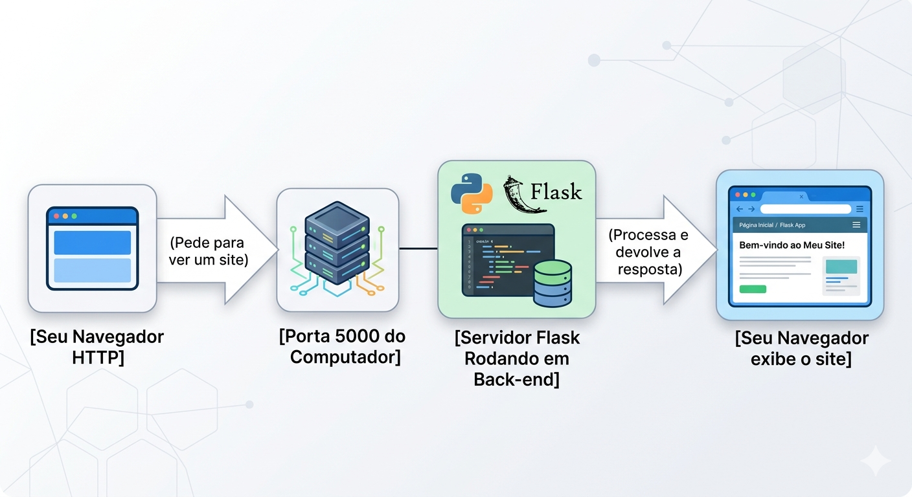
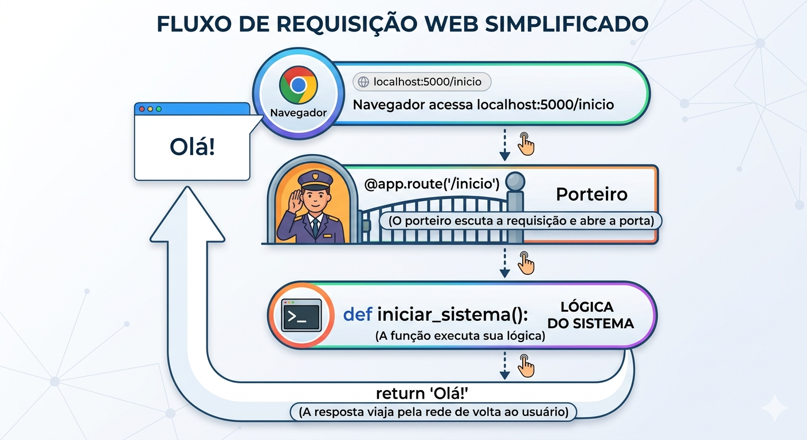
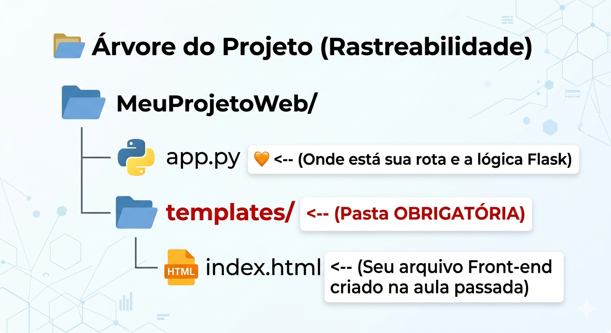

Descrição: Introdução ao Servidor Web Python usando o microframework Flask. Desmistificação do roteamento web (@app.route), mapeamento de endpoints e renderização de arquivos HTML locais. Configuração do ambiente localhost (porta 5000) e modo de depuração para testes no ciclo de desenvolvimento.
Você já parou para pensar que a internet, no seu núcleo, é apenas uma gigantesca troca de mensagens? Quando você digita "netflix.com" ou abre o aplicativo do seu banco, seu dispositivo atua como um cliente pedindo algo, e um computador robusto do outro lado do mundo, chamado servidor, processa a regra de negócio e responde enviando telas, vídeos ou dados.
No mercado de desenvolvimento atual, dominar o back-end – o "cérebro" que roda nesse servidor – é uma das habilidades mais requisitadas. Hoje, nós vamos transformar o seu próprio computador nesse cérebro. Usaremos Python junto com o Flask, um microframework de mercado escolhido por sua arquitetura minimalista (conhecida como no-frills), tão poderosa e veloz que é utilizada para levantar microsserviços na Netflix e no Reddit.
Se os nossos algoritmos em Python sempre rodaram isolados e fechados no terminal da nossa IDE, como nós fazemos para criar um "canal" e permitir que o navegador web consiga enviar requisições e receber respostas do nosso código?
Nós vamos estruturar esta aula em três grandes passos. O foco é entendermos "por que" as coisas acontecem antes de apenas digitar o código. Se tiverem dúvidas, usem ferramentas de IA Generativa de forma ética: peçam para a IA explicar um conceito sob uma nova ótica ou analogia, nunca apenas para copiar a resposta pronta. O conhecimento real vem da prática!
O Flask é classificado como um microframework web escrito em Python. Ele recebe o prefixo "micro" não por ser fraco, mas por ser modular e minimalista: ele não traz dezenas de bibliotecas pesadas e desnecessárias instaladas por padrão, permitindo que nós, desenvolvedores, tenhamos total controle para adicionar apenas o que o projeto precisar. Ele constrói nossa base em cima de um kit de ferramentas poderoso chamado Werkzeug (que lida com as requisições web) e o Jinja2 (motor de templates).
No ciclo de desenvolvimento que faremos, o nosso próprio computador atuará como servidor local. A isso damos o nome de localhost, cujo endereço de IP interno normalmente é 127.0.0.1. Esse ambiente isolado é perfeito porque impede acesso externo durante nossos testes e garante que nossa aplicação "ouça" o navegador através de uma "porta" específica do sistema, que por convenção no Flask é a porta 5000.

Python
# Importamos a classe principal do microframework
from flask import Flask
# Inicializamos a nossa aplicação web (instanciando o objeto)
app = Flask(__name__)
# Garantimos que o servidor só suba se executarmos este arquivo diretamente
if __name__ == '__main__':
# Ligamos o servidor no localhost, porta padrão, com modo de depuração ativado
app.run(debug=True)O nosso servidor já está de pé, mas ele não sabe o que fazer quando recebe uma "visita". É aqui que entram as Rotas e os Endpoints. Um endpoint é o URL final mapeado (como /perfil ou /inicio). Para criarmos isso, o Flask usa o conceito de decorator – representado pelo símbolo @.
Um decorator @app.route() é basicamente um "porteiro" programado para interceptar e escutar ações e requisições HTTP feitas pelo usuário. Quando o navegador tentar acessar o caminho que nós configuramos, o decorator detecta o acesso e executa a função Python que estiver imediatamente abaixo dele. É a fusão perfeita entre a rede e a nossa lógica de programação.

Python
from flask import Flask
app = Flask(__name__)
# Definimos o padrão de URL (rota) que o navegador vai acessar
@app.route('/inicio')
def pagina_inicial():
# A função é ativada pela rota. O return agora devolve dados ao navegador!
return "<h1>Olá, Mundo! Este é o back-end respondendo.</h1>"
if __name__ == '__main__':
app.run(debug=True)Retornar uma String (texto comum) na nossa função funciona, mas nenhum sistema real do mercado – e nem a nossa SA – é feito de textos puros. Nós precisamos de interfaces ricas, botões, tabelas e estilização. Para isso, o Flask promove uma transição técnica: nós usamos a função importável render_template.
Ela instrui o servidor a buscar um arquivo HTML inteiro e prepará-lo para envio. Contudo, há uma regra arquitetural estrita imposta pelo Flask: por padrão, todos os arquivos .html devem estar obrigatoriamente agrupados dentro de uma pasta na raiz do projeto chamada templates. É a organização da casa.

Python
# Adicionamos a ferramenta render_template na nossa importação inicial
from flask import Flask, render_template
app = Flask(__name__)
# Criamos a rota para o desafio prático
@app.route('/meusite')
def apresentar_site():
# Encontra o HTML na pasta 'templates', processa e devolve a página estruturada
return render_template('index.html')
if __name__ == '__main__':
app.run(debug=True)E se eu tentar rodar e aparecer a mensagem "Port 5000 is already in use"?
Isso significa que outro serviço no seu sistema operacional já está usando essa "estrada". O host está ocupado. Você pode contornar isso dizendo ao Flask para usar a porta seguinte:
app.run(port=5001, debug=True)Por que o arquivo principal costuma se chamar app.py ou main.py?
É uma convenção entre programadores para facilitar a rastreabilidade do código. Qualquer pessoa da equipe que pegar o projeto saberá que ali está a ignição do sistema.
O Flask entende CSS e Imagens, ou só HTML?
Sim, ele entende! Porém, enquanto os HTMLs ficam na pasta templates, os recursos estáticos (CSS, imagens, fontes) devem ir obrigatoriamente para outra pasta raiz chamada static.
O debug=True é seguro para sistemas no ar (produção)?
Jamais! Em ambiente de desenvolvimento local ele nos salva apontando o local do erro com exatidão. Se for para produção (deploy), deixamos o modo desligado, caso contrário exporemos nosso código-fonte para usuários comuns (ou hackers).
Se um projeto Django é mais completo (full-stack), por que a indústria ainda procura devs Flask?
Justamente pela leveza e flexibilidade de construir apenas APIs ou serviços independentes rápidos (microsserviços). O Flask não força o desenvolvedor a seguir uma arquitetura engessada, promovendo integração fácil entre plataformas diferentes.
Com base no conteúdo da Aula 19 - Framework Web (Flask) e Rotas, elaborei uma trilha de 10 exercícios progressivos. Eles foram desenhados para levar você do zero — a instalação e o "olá mundo" — até a integração completa da sua Situação de Aprendizagem (SA).
Descrição: Configure o ambiente e inicie um servidor Flask básico. Certifique-se de que ele só rode se o arquivo for executado diretamente e com o modo de depuração ativado.
Entrega: Print do terminal exibindo a mensagem "Running on http://127.0.0.1:5000".
Descrição: Crie um endpoint chamado /ping. O objetivo é entender como o decorator @app.route intercepta a requisição e retorna uma resposta simples.
Entrega: Captura de tela do navegador exibindo o texto "Pong!" ao acessar o endereço.
Descrição: Configure a rota raiz (/) para que, ao ser acessada, exiba uma String contendo seu Nome, sua Turma do SENAI e o tema escolhido para sua SA.
Entrega: Execução comprovada via localhost no navegador.
Descrição: Desenvolva um script que possua três rotas simultâneas: /login, /cadastro e /sobre. Cada uma deve retornar um texto orientando o usuário sobre em qual seção ele está.
Entrega: O código do arquivo app.py completo contendo os três decorators.
Descrição: Aplique os princípios de organização (CS2) criando a estrutura obrigatória de pastas na raiz do seu projeto: templates (para HTML) e static (para CSS/Imagens).
Entrega: Print da árvore de arquivos no VS Code estruturada corretamente.
Descrição: Use a função render_template para que a rota /teste não retorne apenas um texto, mas sim um arquivo HTML real chamado teste.html guardado na pasta correta.
Entrega: O código Python utilizando o import e o comando render_template corretamente.
Descrição: Com o debug=True ativo, provoque um erro de divisão por zero dentro de uma função de rota. Isso serve para aprender a ler o relatório de erros do Werkzeug.
Entrega: Print do navegador exibindo o erro detalhado e uma breve descrição de onde o console indica que a lógica quebrou.
Descrição: Altere as configurações de inicialização para que o servidor suba na porta 8080 em vez da 5000, simulando a resolução de conflitos de rede.
Entrega: Captura do navegador acessando o site via localhost:8080.
Descrição: Tente acessar uma rota inexistente (ex: /admin_secreto) e analise a resposta do servidor.
Entrega: Um pequeno relatório (texto) explicando o que o código de erro 404 significa no contexto de rotas mapeadas.
Descrição: O desafio mestre! Pegue todo o front-end (HTML/CSS) da sua Situação de Aprendizagem, organize nas pastas templates e static, e crie uma rota /sistema que renderize sua aplicação funcional.
Entrega: Demonstração do projeto front-end completo sendo servido pelo back-end Python na porta 5000.
Estes exercícios NÃO serão entregues no AVA, você deve apresentar ao professor durante esta aula, toda estrutura de pastas e o servidor funcionando. APRESENTAÇÃO INDIVIDUAL.
Hoje nós construímos a grande "ponte" do nosso projeto final ("Da Ideia ao Código: Construção de Aplicações Funcionais"). O seu banco de dados Python não podia falar diretamente com a tela HTML do usuário. Agora, com a aplicação Flask estruturada, nós já temos o maestro que vai ligar a inteligência, as funções e o armazenamento aos botões e interfaces que o usuário manipula no Front-end.
Com o nosso arquivo HTML renderizando pelo servidor, chegou a hora de dar vida a ele! Na próxima aula, aprenderemos a transitar de "arquivos HTML estáticos e mortos" para interfaces que recebem e desenham dados reais do sistema no momento em que a página carrega, explorando o poder das variáveis dinâmicas no Back-end com Jinja2. Preparem-se!